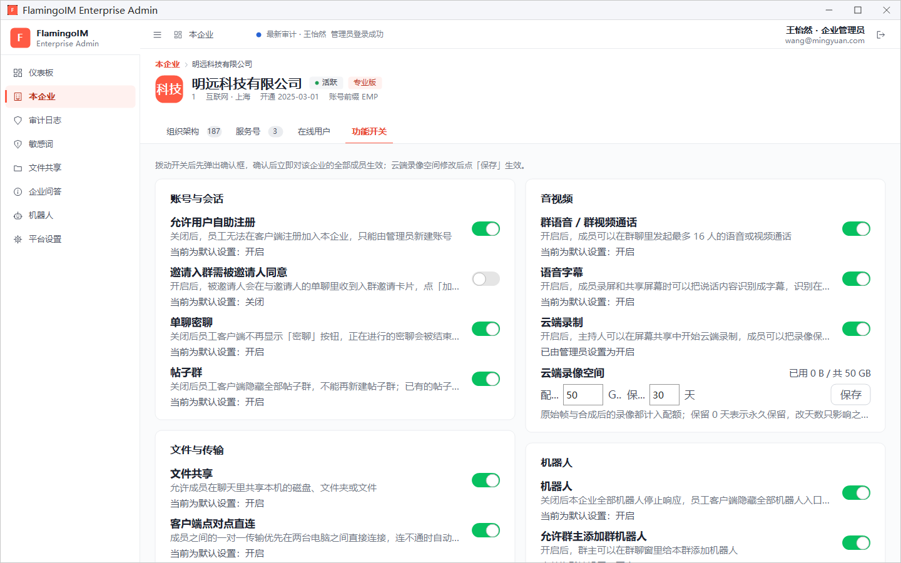
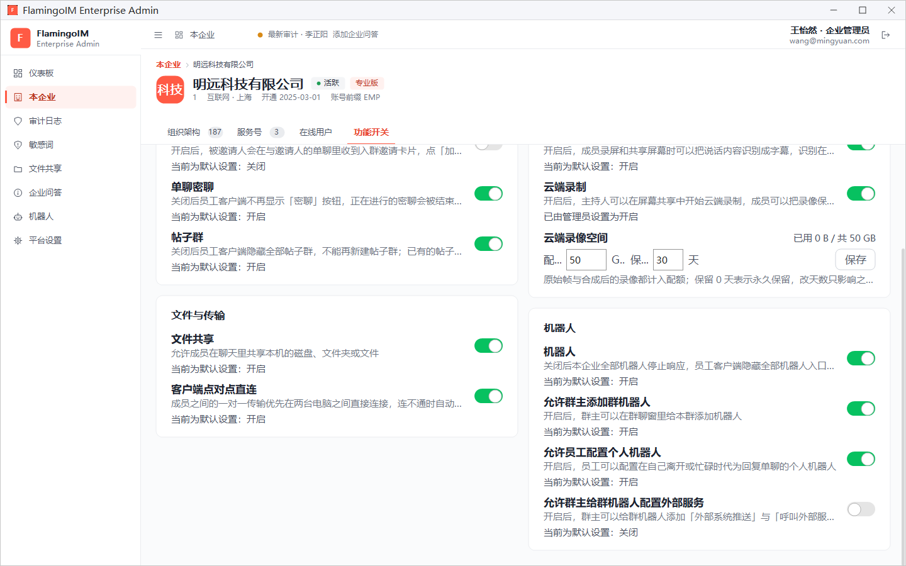

功能开关
功能开关决定本企业的员工能不能使用某些客户端功能，例如密聊、帖子群、文件共享、群通话和机器人。本章逐项说明每个开关打开和关闭后的效果，以及它对应客户端里的哪项功能。
- 适用：企业管理员
- 位置：左侧导航「本企业」→「功能开关」页签
- 生效范围：本企业的全部成员，确认后立即生效
如何修改开关
在「本企业」页面切到 功能开关 页签。开关按「账号与会话」「文件与传输」「音视频」「机器人」四组排列，每项下方写明它的作用：

- 拨动要修改的开关。
- 在弹出的确认框中阅读这次修改的影响，例如关闭时正在进行的会话会怎样、已有数据是否保留。
- 点确认框中的 打开 或 关闭。修改立即对本企业的全部成员生效，页面提示「已打开…」或「已关闭…」。
每项开关下方的最后一行说明当前值的来源：
- 当前为默认设置：开启 / 关闭：本企业还没有改过这一项，使用的是系统默认值。
- 已由管理员设置为开启 / 关闭：管理员已经明确设置过这一项（截图中的「云端录制」就是这种情况）。
下文各表的「默认」一列取自截图中显示「当前为默认设置」的项目；「云端录制」在截图中已由管理员设置过，看不出默认值，记为「—」。
账号与会话
| 开关 | 默认 | 作用与关闭后的影响 | 客户端功能 |
|---|---|---|---|
| 允许用户自助注册 | 开启 | 打开时，员工可以在客户端填写本企业全称自助注册加入。关闭后，新员工无法在客户端注册加入本企业，只能由管理员在组织架构中新建账号；已有账号不受影响。 | 注册新账号 |
| 邀请入群需被邀请人同意 | 关闭 | 开启后，被邀请人会在与邀请人的单聊里收到入群邀请卡片，点「加入群聊」后才入群；关闭时被邀请人直接入群。从开启改为关闭时，已经发出、仍在有效期内的入群邀请卡片照样可以点击入群。 | 群聊 |
| 单聊密聊 | 开启 | 关闭后员工客户端不再显示「密聊」按钮，也不能再发起密聊；正在进行的密聊会被立即结束，双方只能查看已有内容。 | 密聊 |
| 帖子群 | 开启 | 关闭后员工客户端隐藏全部帖子群，也不能再新建帖子群；已有的帖子与留言保留在服务器上，重新打开后恢复。 | 帖子群 |
文件与传输
| 开关 | 默认 | 作用与关闭后的影响 | 客户端功能 |
|---|---|---|---|
| 文件共享 | 开启 | 允许成员在聊天里共享本机的磁盘、文件夹或文件。关闭后，客户端不再显示文件共享入口，正在进行的访问与传输会立即结束；已有的共享不会失效，对方看到「暂不可用」，重新打开后自动恢复。 | 文件共享；管理端见文件共享管理 |
| 客户端点对点直连 | 开启 | 成员之间的一对一传输优先在两台电脑之间直接连接，连不通时自动经服务器中转。关闭后，新建的一对一传输一律经服务器中转，正在进行的直接连接不会中断。 | 图片、文件与文件夹 |
音视频
| 开关 | 默认 | 作用与关闭后的影响 | 客户端功能 |
|---|---|---|---|
| 群语音 / 群视频通话 | 开启 | 开启后，成员可以在群聊里发起最多 16 人的语音或视频通话。关闭后，成员不能再发起或加入群通话，客户端群聊窗里的「语音通话」「视频通话」按钮随之隐藏；正在进行的群通话不受影响。 | 语音与视频通话 |
| 语音字幕 | 开启 | 开启后，成员录屏和共享屏幕时可以把说话内容识别成字幕。识别在成员自己的电脑上进行，声音不会上传。关闭后，录屏不再生成字幕，屏幕共享中也不再显示字幕；已经生成的字幕文件不受影响。 | 字幕模式与字幕编辑 |
| 云端录制 | — | 开启后，屏幕共享的主持人可以开始云端录制，成员录屏时可以选择把录像保存到云端，录像占用企业的云端录像空间。关闭后，成员不能再开始云端录制、不能把录像保存到云端；正在进行的云端录制会录完，已有的云端录像照常可以观看。 | 屏幕录制、屏幕共享 |
云端录像空间
「云端录制」下方的 云端录像空间 控制本企业云端录像能占用多少存储，右上角显示已用空间和总配额，例如「已用 0 B / 共 50 GB」。
- 在 配额 框中填写总配额，单位 GB，可填 0~1000000 之间的整数。原始帧与合成后的录像都计入配额。配额填 0 时不能再新增云端录像。
- 在 保留 框中填写录像保留的天数，可填 0~3650 之间的整数，0 表示永久保留。修改天数只影响之后结束的录像。
- 点 保存。与开关不同，这两项修改后要点「保存」才会生效。
机器人

| 开关 | 默认 | 作用与关闭后的影响 | 客户端功能 |
|---|---|---|---|
| 机器人 | 开启 | 总开关。关闭后，本企业全部机器人停止响应：企业机器人、群机器人与个人机器人都不再回复、不再发定时消息、不再接收外部系统推送，员工客户端隐藏全部机器人入口。机器人的配置保留，重新打开后恢复。 | 机器人；管理端见企业机器人 |
| 允许群主添加群机器人 | 开启 | 开启后，群主可以在群聊窗里给本群添加、修改机器人。关闭后，群主不能再添加或修改群机器人，客户端隐藏相应入口。 | 机器人 |
| 允许员工配置个人机器人 | 开启 | 开启后，员工可以配置在自己离开或忙碌时代为回复单聊的个人机器人。关闭后，员工不能再配置个人机器人，客户端隐藏「我的机器人」入口。 | 机器人 |
| 允许群主给群机器人配置外部服务 | 关闭 | 开启后，群主可以给群机器人添加「外部系统推送」与「呼叫外部服务」两类规则，呼叫的地址须在外部服务域名白名单内。关闭后，群主不能再添加这两类规则。 | 机器人 |
打开外部服务前请先评估开启「允许群主给群机器人配置外部服务」后，群消息可能会被发送到外部服务。请先在企业机器人页面配置好域名白名单，只放行企业信任的服务。